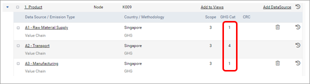
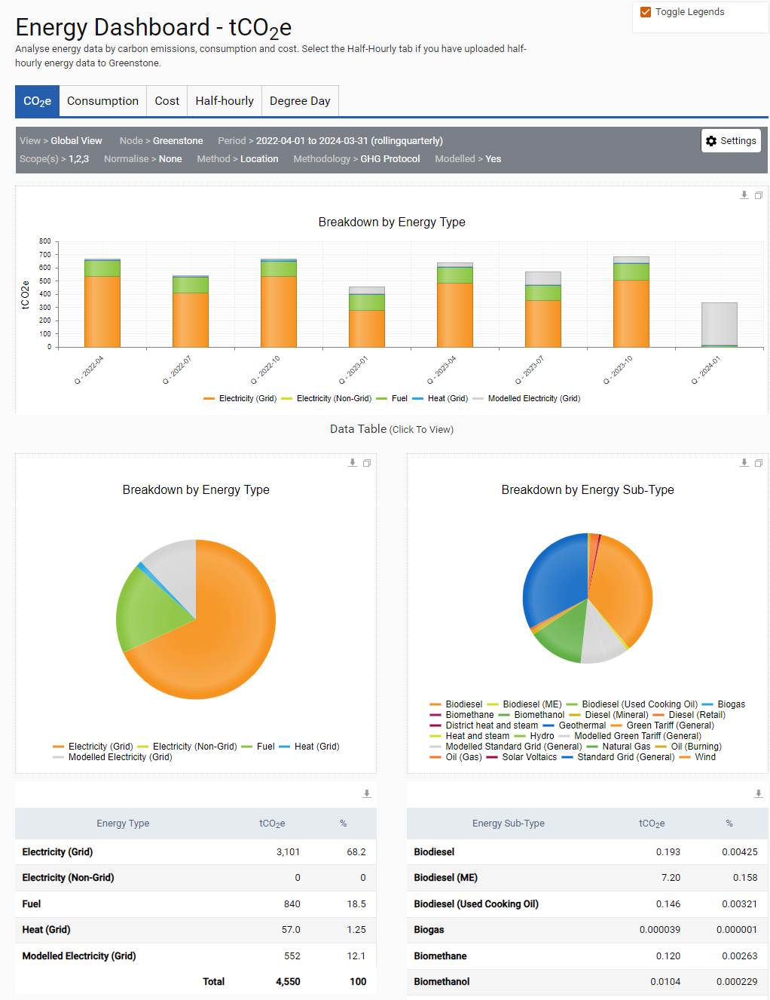

As well as providing an overall dashboard for which the analysis level is fully customized by the user, SPM also has data source specific dashboards. These dashboards are more structured and have been designed to provide you with more bespoke analysis tools that you may require for different data sources.
You are also able to analyze the consumption from these dashboards where you can select one of the base units within the ‘Settings’ control e.g. kWh, tons, liters, km.
The specific dashboards are found in the ‘Dashboards’ drop-down, and contain:
The GHG scope 3 dashboard will display your emissions according to the 15 GHG Protocol Scope 3 categories. To enable this to work, all relevant Scope 3 data sources need to be set to one of the GHG Scope 3 categories (green outline) in ‘Admin Settings > Organisation > Nodes & Data Sources’.


The scope 3 elements of scope 1 and 2 datasources are included on this dashboard as per the table below. Any scope 3 datasources that have not been assigned a GHG scope 3 category are also included in the ‘Scope 3 Unassigned’ value.
| Scope Selector | Display on Dashboard and Table |
| Scope 3 | Scope 3 Unassigned |
| Scope 3 Indirect | Scope 3 Indirect Unassigned |
| Scope 3 Transmission | Scope 3 Transmission Unassigned |
| Scope 3 Indirect Transmission | Scope 3 Indirect Transmission Unassigned |